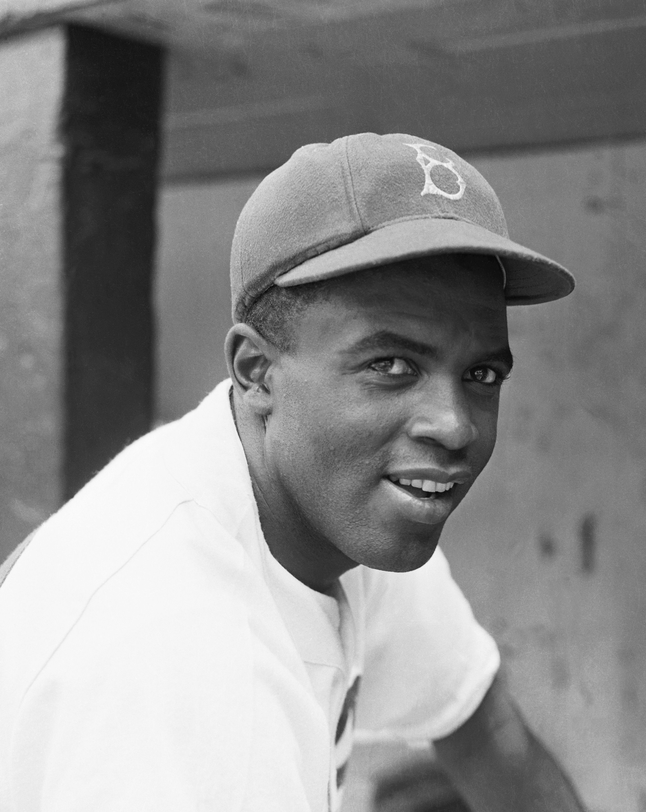

Harriet Tubman was an escaped slave who helped many other enslaved people to gain their freedom. She is so inspirational because she helped end slavery in the United States as a conductor on the Underground Railroad. Harriet was also a women's rights advocate. She also became the first women to lead an armed military raid in June 1863
|  | Jackie Robinson was born on January 31,1919. He became the first African American to play MLB for the Brooklyn Dodgers.He helped the Dodgers beat the New York Yankees to win their first World Series Championship. He was a key figure in the Civil Rights Movement. |
|
Rosa Parks was born on February 4, 1913. She was an American activist in the civil rights movement. She was best known for her refusal to give up her bus seat to a white man in the Montgomery bus boycott. |
|
Marther Luther King Jr was born on January 15, 1929. He was an African American Baptist, activist, and political philosopher. He was one of the prominant leaders in the civil rights movement. He is best known for his "I have a Dream" speech during the March on Washington in 1963. |